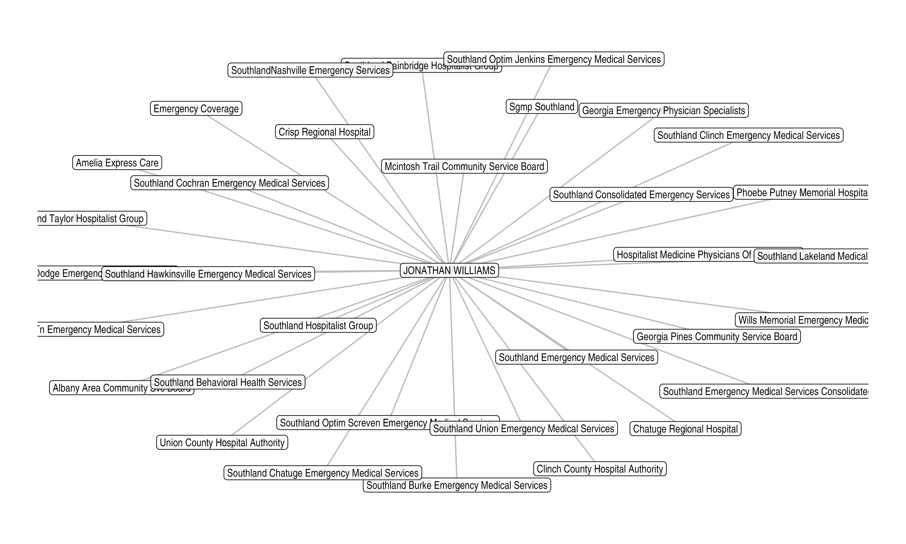

Provider Networks
NPIs, PAC IDs, Enrollment IDs, CCNs, CLIAs and More
Andrew Bruce
2023-12-04
Source:vignettes/articles/networks.Rmd
networks.Rmd
library(provider)
library(dplyr)
library(purrr)
library(stringr)
library(igraph)
library(tidygraph)
library(ggraph)Example: Edge Table
edge_table <- tribble(
~from, ~to, ~label,
"Individual", "Organization", "Reassigns Benefits To",
"Organization", "Individual", "Accepts Reassignment From")
edge_table#> # A tibble: 2 × 3
#> from to label
#> <chr> <chr> <chr>
#> 1 Individual Organization Reassigns Benefits To
#> 2 Organization Individual Accepts Reassignment FromExample: Node Table
node_table <- tribble(
~name, ~x, ~y,
"Individual", 1, 0,
"Organization", 2, 0)
node_table#> # A tibble: 2 × 3
#> name x y
#> <chr> <dbl> <dbl>
#> 1 Individual 1 0
#> 2 Organization 2 0
example <- graph_from_data_frame(
d = edge_table,
vertices = node_table,
directed = T)
example#> IGRAPH 564d784 DN-- 2 2 --
#> + attr: name (v/c), x (v/n), y (v/n), label (e/c)
#> + edges from 564d784 (vertex names):
#> [1] Individual ->Organization Organization->Individual
ggraph(example, layout = "manual", x = x, y = y) +
geom_node_text(aes(label = name), size = 5) +
geom_edge_arc(
aes(label = label),
angle_calc = 'none',
label_dodge = unit(2, 'lines'),
arrow = arrow(length = unit(0.5, 'lines')),
start_cap = circle(4, 'lines'),
end_cap = circle(4, 'lines'),
strength = 1) +
theme_void() +
coord_fixed()Provider Networks
williams <- provider:::georgia_reassignments() |>
filter(npi == "1346391299") |>
mutate(provider = str_glue("{first} {last}"),
#provider = str_to_title(provider),
organization = str_to_title(organization),
organization = str_remove_all(organization,
regex("Llc|Inc| Pc|-|,+|\\.")),
organization = str_squish(organization)) |>
select(provider, organization, reassignments) |>
arrange(desc(reassignments))
williams#> # A tibble: 38 × 3
#> provider organization reassignments
#> <glue> <chr> <int>
#> 1 JONATHAN WILLIAMS Emergency Coverage Corp 257
#> 2 JONATHAN WILLIAMS Southland Bainbridge Hospitalist Group 212
#> 3 JONATHAN WILLIAMS Crisp Regional Hospital 200
#> 4 JONATHAN WILLIAMS Phoebe Putney Memorial Hospital 184
#> 5 JONATHAN WILLIAMS Southland Emergency Medical Services Consoli… 137
#> 6 JONATHAN WILLIAMS Union County Hospital Authority 117
#> 7 JONATHAN WILLIAMS Clinch County Hospital Authority 104
#> 8 JONATHAN WILLIAMS Sgmp Southland 102
#> 9 JONATHAN WILLIAMS Southland Consolidated Emergency Services 75
#> 10 JONATHAN WILLIAMS Southland Emergency Medical Services 74
#> # ℹ 28 more rows
{tidygraph}
will_tdgrph <- tidygraph::as_tbl_graph(williams, directed = FALSE)
summary(will_tdgrph)#> IGRAPH 7f790ee UN-- 39 38 --
#> + attr: name (v/c), reassignments (e/n)
will_tdgrph#> # A tbl_graph: 39 nodes and 38 edges
#> #
#> # An unrooted tree
#> #
#> # A tibble: 39 × 1
#> name
#> <chr>
#> 1 JONATHAN WILLIAMS
#> 2 Emergency Coverage Corp
#> 3 Southland Bainbridge Hospitalist Group
#> 4 Crisp Regional Hospital
#> 5 Phoebe Putney Memorial Hospital
#> 6 Southland Emergency Medical Services Consolidated
#> # ℹ 33 more rows
#> #
#> # A tibble: 38 × 3
#> from to reassignments
#> <int> <int> <int>
#> 1 1 2 257
#> 2 1 3 212
#> 3 1 4 200
#> # ℹ 35 more rows
ggraph(will_tdgrph, "stress") +
geom_edge_link(end_cap = circle(0.5, 'mm'),
edge.width = 0.5, color = "grey") +
geom_node_point(show.legend = FALSE,
alpha = 1,
color = 'steelblue',
size = 2.5) +
geom_node_label(aes(label = name),
repel = FALSE,
size = 3,
alpha = 0.85,
label.r = unit(0.25, "lines"),
label.size = 0.1,
check_overlap = TRUE) +
theme_graph(fg_text_colour = 'white')
# individuals <- southland |>
# filter(associations > 5) |>
# distinct(npi_ind, .keep_all = TRUE) |>
# pull(npi_ind) |>
# map_dfr(~reassignments(npi = .x)) |>
# mutate(individual = str_glue("{first} {last}")) |>
# select(individual,
# organization,
# associations,
# entry,
# reassignments_org = reassignments,
# pac_org,
# enid_org,
# npi_ind = npi,
# pac_ind = pac,
# enid_ind = enid) |>
# filter(organization != "SGMP SOUTHLAND LLC")
#
# individuals
x <- c(1, 0.9871, 0.9485, 0.8855, 0.7994, 0.6927, 0.5681, 0.4287, 0.2782, 0.1205,
-0.0403, -0.2, -0.3546, -0.5, -0.6324, -0.7485, -0.8452, -0.92, -0.9709, -0.9968,
-0.9968, -0.9709, -0.92, -0.8452, -0.7485, -0.6324, -0.5, -0.3546, -0.2, -0.0403,
0.1205, 0.2782, 0.4287, 0.5681, 0.6927, 0.7994, 0.8855, 0.9485, 0.9871)
y <- c(0, 0.1604, 0.3167, 0.4647, 0.6007, 0.7212, 0.823, 0.9035, 0.9605, 0.9927,
0.9992, 0.9798, 0.935, 0.866, 0.7746, 0.6631, 0.5345, 0.392, 0.2393, 0.0805,
-0.0805, -0.2393, -0.392, -0.5345, -0.6631, -0.7746, -0.866, -0.935, -0.9798,
-0.9992, -0.9927, -0.9605, -0.9035, -0.823, -0.7212, -0.6007, -0.4647, -0.3167,
-0.1604)
ggraph(will_tdgrph, layout = "manual", x = x, y = y) +
geom_edge_link0(aes(alpha = reassignments, width = reassignments, colour = reassignments)) +
scale_edge_colour_gradient(low = "#AEDDFC", high = "#27408B") +
scale_edge_width(range = c(0.2, 2)) +
scale_edge_alpha(range = c(0.1, 1)) +
geom_node_point(aes(fill = degree, size = degree), colour = "#9F94F2", shape = 21, stroke = 3) +
scale_fill_gradient(low = "#87CEFF", high = "#27408B") +
scale_size(range = c(1, 5)) +
geom_node_text(aes(label = name), colour = "#0F0909", size = 4, family = "Helvetica") +
theme_graph()#> Error in `geom_node_point()`:
#> ! Problem while computing aesthetics.
#> ℹ Error occurred in the 2nd layer.
#> Caused by error in `compute_aesthetics()`:
#> ! Aesthetics are not valid data columns.
#> ✖ The following aesthetics are invalid:
#> ✖ `fill = NULL`
#> ✖ `size = NULL`
#> ℹ Did you mistype the name of a data column or forget to add `after_stat()`?